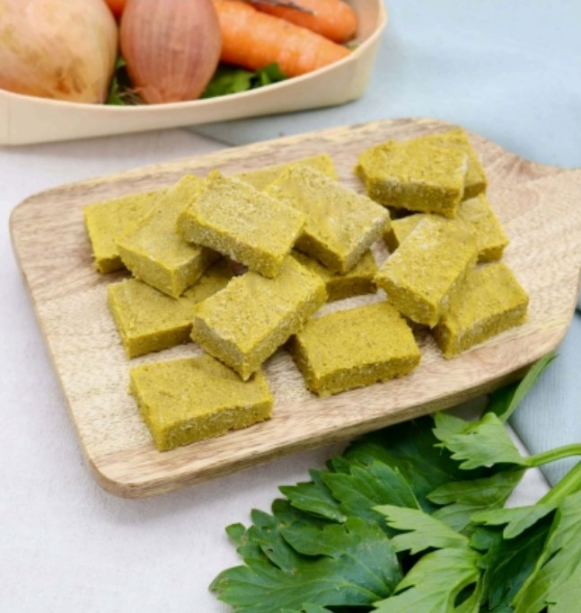
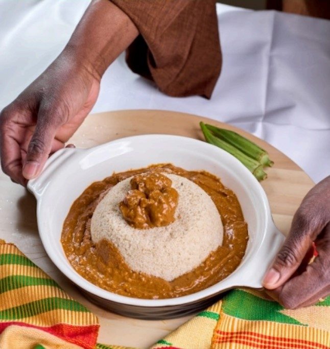

Moi c’est Koumba, maman depuis un bon moment et je cuisine souvent. Je suis d’origine africaine et chez nous il y a un éléments de cuisine qui revient beaucoup. Le fameux cube aromatique notamment appelé « cube maggi » car popularisé par la marque.
Ces cubes sont des bouillons comprimés qu’on met dans un bouillon même ou dans de l’au afin d’ajouté une saveur à une sauce par exemple. Ces derniers sont composés de sel avec excès et d’additifs. Ils sont donc mauvais pour la santé et peuvent causer de grave problèmes de santé.

Voici mon constat. Dans mon entourage j’ai remarqué une présence de maladies chroniques comme le diabète de type B ou encore l’hypertension notamment lié à une mauvaise alimentation.

C’est cela qui m’a mené à lancer Sedy & Yuma, un bouillon végétal d’assaisonnement aux saveurs africaines, une alternative aux cubes industriels souvent trop salés et composés d’un bon nombre d’additifs. Mon alternative est conçue à base de légumes, d’herbes aromatiques et d’épices africaines 100% naturelles. Cette dernière est pensée pour offrir une alternative saine et savoureuse : Un bon goût au profit de notre santé. C’est le plaisir de renouer avec les bonnes saveurs de nos grand-mères dans vos préparations du quotidien : sauces, soupes, marinades ...pour les relever de manière naturelle et authentique, sans excès de sel ni exhausteurs de goût, tout en respectant votre santé et l'environnement.